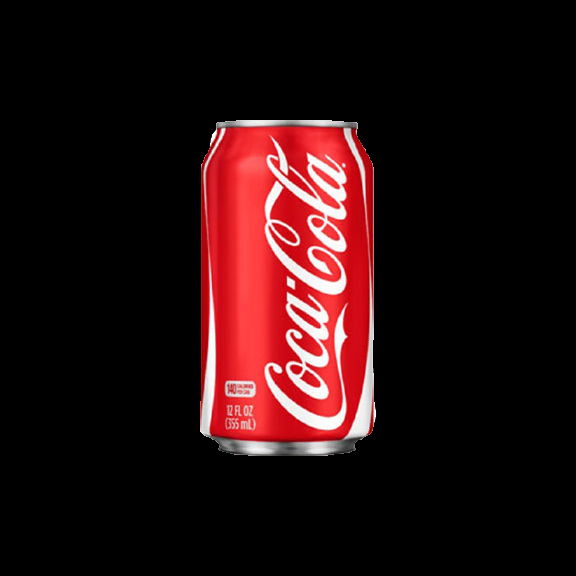
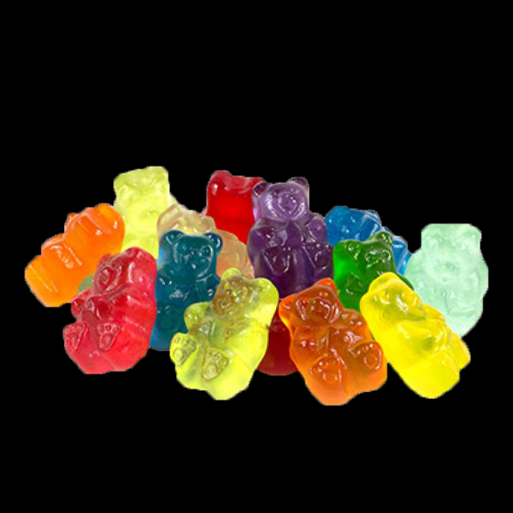
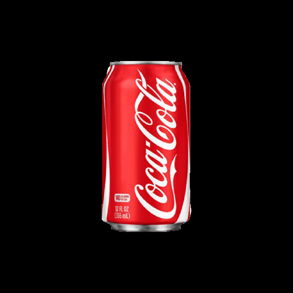
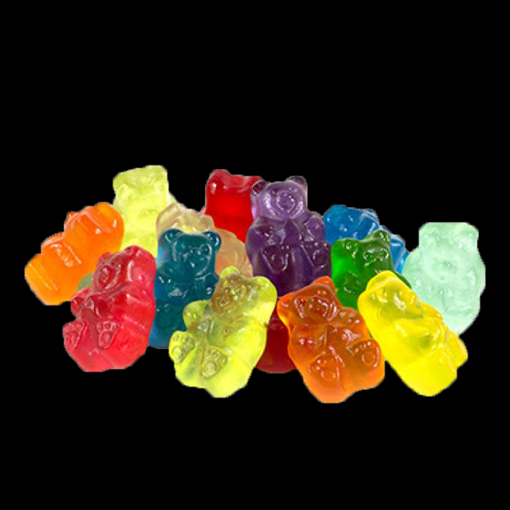

Soda, Sugar, and Fast Food are all equally satisfying addictive substances for anyone who isn't concerned with physical health and overall appearance. Available on every corner at all times, these are some of the most addictive substances on the market.
Roughly 50 million Americans of all ages suffer from a Fast Food addiction, while Sugar affects 42.3 million and 48% of Americans drink a soda at least once a day. All three of these addictions are directly linked to the obesity epidemic in the US as well.